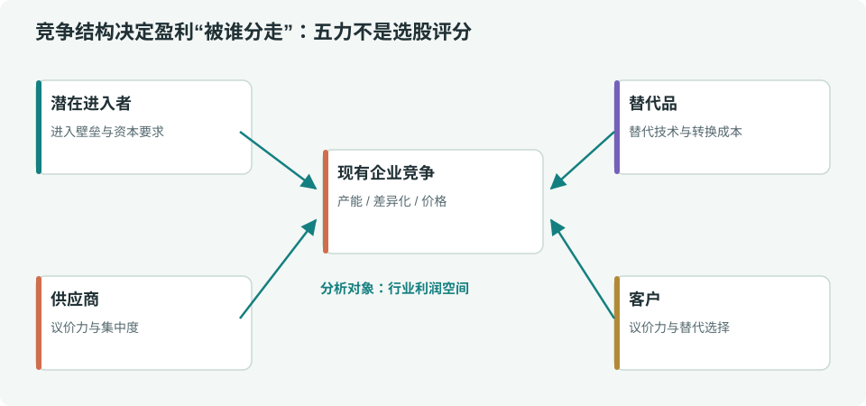
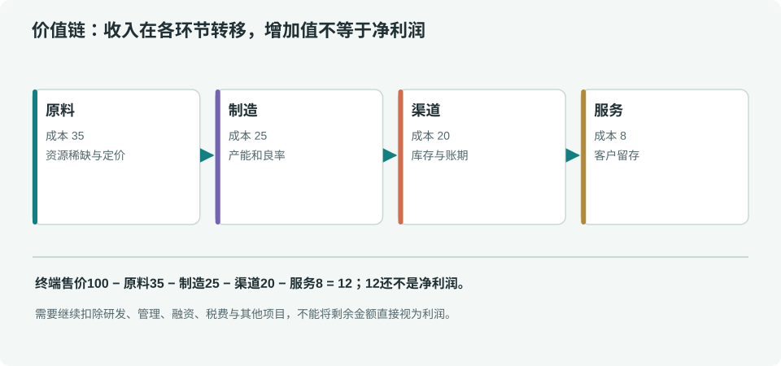
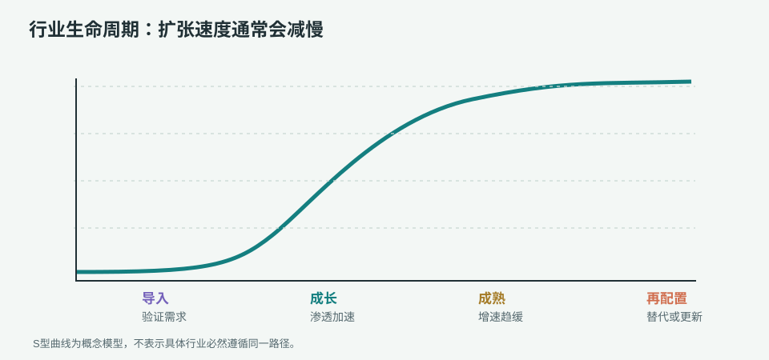

CHAPTER 07 · INVESTMENT ANALYSIS
行业分析：竞争结构、利润池与产业链
行业增长并不必然创造股东回报。用产业链、五力、生命周期与量价成本找到利润和现金的去向。
行业高增长，为何公司仍可能亏损？
快速增长的市场吸引资本进入，产能扩张可能压低价格、推高库存和资本开支。行业总收入增长、全行业经济利润增长、某一公司股东回报增长是三个不能相互替代的命题。行业研究应找到谁控制定价权、谁承担资本投入、谁能够持续获得超过资本成本的回报。
定义行业边界，避免错误的可比公司
行业可以按产品用途、技术、客户或供应链位置划分，同一家综合公司可能横跨多个细分市场。比较毛利率前，必须确认客户、产品收入确认和成本分配相似；计算市场份额前必须确认地域、期间、分母与分子单位一致。
| 研究问题 | 建议的边界 | 常见错误 |
|---|---|---|
| 竞争份额 | 同类产品、地区、统计期间 | 用国内销量除全球销量 |
| 盈利能力 | 相近产品与商业模式 | 把平台软件和硬件代工直接比较 |
| 有效产能 | 具备工艺能力的实际产能 | 只统计宣布的名义产能 |
| 行业利润池 | 全成本、资本投入后的经济利润 | 把所有中间交易收入相加 |
五力：为什么行业规模大，利润未必高
现有企业竞争、潜在进入者、替代品、供应商和客户议价力共同决定行业长期利润空间。进入壁垒高不等于所有参与者都高回报；价格监管、技术替代及重资产维护成本可能压低收益。

要使五力可验证，至少看关键供应商替代性、前五大客户集中度、产能投产速度、合同价格传导与产品转换成本。不能只写“壁垒很高”却不提供数据。
产业链的利润分配：售价100并非净利100
假设终端售价为100，原材料35、制造25、渠道20、售后服务8，剩余12。剩余12仍不是净利润，还要支付研发、管理、融资和税。中间环节交易收入若被逐级累加，会重复统计同一件最终产品的价值。

“微笑曲线”只是一种讨论价值分布的假说。精密制造节点也可能凭专利、规模和良率获得议价权；需要通过毛利、现金流、存货与投入资本回报验证。
生命周期不是固定的收益轮动时钟
导入、扩张、成熟、衰退或重塑有助于组织研究问题，但现实行业可能跨阶段，技术革新可能令成熟市场重新增长。即使行业处于扩张期，新产能投入与价格竞争也可能使自由现金流下降。

导入期关注商业模式与融资持久性；扩张期关注资本投入与产能兑现；成熟期关注现金创造与竞争结构；转型期关注资产减值和新技术。行业阶段不是交易日历。
量、价、成本、资本回报：把景气落到财报
在固定产品结构与币种的简化情况下，收入＝平均售价×销量。若销量上升15%，均价下降10%，收入变化为1.15×0.9−1＝3.5%，不是15%。若原料成本同时上涨，利润甚至可能下降。
经营收入到股东自由现金流之间，还存在税、资本开支、应收存货占用。行业好不好，应比较增量投入资本收益率与资本成本，而不只是销售增长。
轮动假设必须通过样本外检验
宏观时钟与行业轮动是可检验的模型假说，不是固定规律。不同市场、金融制度和产业结构下，历史资产表现未必重复；事后挑选景气阶段与最优阈值会使回测过拟合。
| 研究变量 | 先收集证据 | 何时修改判断 |
|---|---|---|
| 需求 | 真实订单、交付与终端使用 | 订单取消率高于预期 |
| 供给 | 有效产能、良率与交付时间 | 投产提前形成过剩 |
| 定价权 | 合同价、替代品、客户留存 | 涨价导致客户迁移 |
| 资本回报 | 增量利润、投资支出、资金回收 | 收入增长但自由现金流下降 |
检验
- 为什么行业销量增长20%不保证公司利润增长20%？
- 怎样用数据验证供应商的议价力？
- 行业轮动回测为什么需要记录指标真实发布时间？
资料来源与适用范围
以下为核对概念的研究与官方资料。构造例子不可被视为投资收益预测；实际数据须核查公布时点与修订版本。